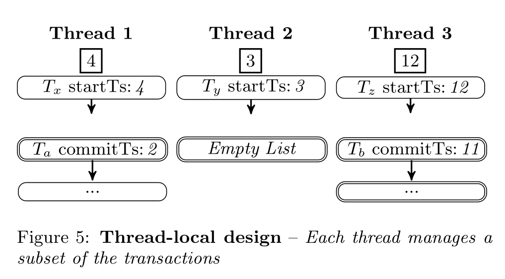
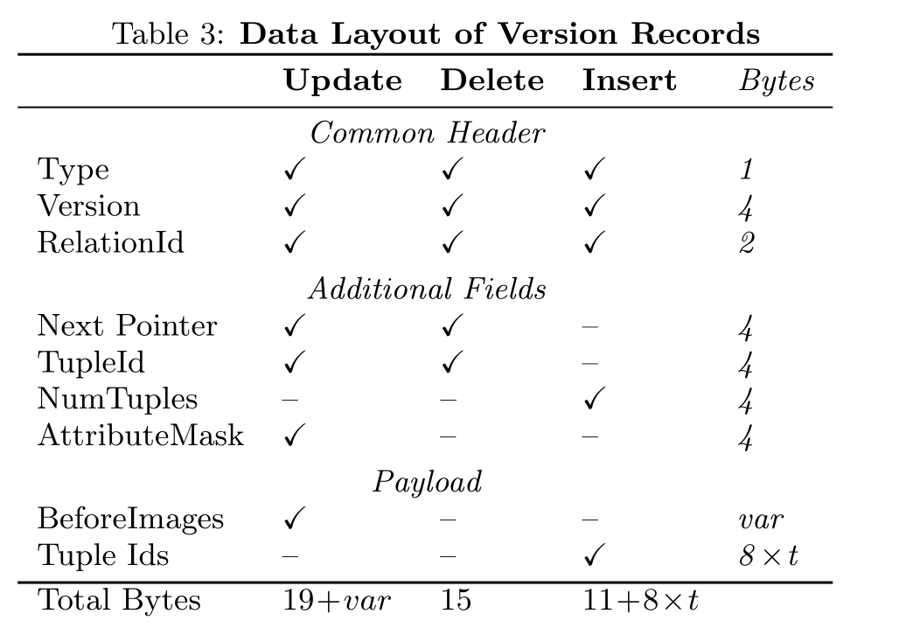

scalable gc for in-memory mvcc sys
现有问题
在使用MVCC技术的数据库上，通常是在存储达到一定阈值或定时根据watermark来gc掉比它更旧版本的数据，所以会存在长时间运行的事务可能导致历史版本垃圾不能被及时回收，同时不断有新事务产生新的数据版本，从而导致版本链越来越长，版本链变长又会导致检索速度变慢，进而让原本就long-live的事务变得更长。从而成为一种恶性循环，令数据库性能大幅下降，特别是对于HTAP workload，GC通常是其中的瓶颈。所以论文提出了一个叫Steam的垃圾回收方式来应对这种场景。
将垃圾回收工作分散在不同的组件和工作线程中，尽可能以去中心化方式进行 GC
下面这个图直观展示了长事务对于GC的影响
对于mvcc版本可见性，B、C事务于v4提交之前开始，所以BC智能读到v1版本的数据，如果按通常的GC方式去维护一个watermark，那么就会导致v2-v999的版本都无法回收，而实际上可能这些版本早就无人问津。所以为了解决这个问题，论文提出一个Steam的垃圾回收策略
GC实际影响
当出现长事务的时候，version record就会堆积。当reader结束的时候，writer才能开始清理这些元组，并且在GC的时候新的事务不能进行写操作。并且随着版本的增多，读事务会越来越慢，导致更多的长事务
总结起来传统GC有3个缺点
- scalability due to global synchronization
- vulnerability to long-living transactions
- inaccuracy in garbage identification
1我理解是多机器之间的gc版本同步问题？导致需要同步开销导致扩展性降低？（其实是线程之间的同步问题）
2为长事务导致版本过多
3太多无用版本未被回收
GC策略调研
steam是基于HyPer做的，也借鉴了HANA的部分思路，只不过steam的GC不是在后台完成，而是在事务处理时完成GC
Hekaton的GC也是在事务处理时完成，但是他只GC事务处理中扫描过的那部分版本，而Steam会在reader可能读到过时版本之前就GC掉他
从几个角度去评估GC策略
Tracking Level
就是GC粒度
最细粒度的方法是tuple-level，GC线程会扫描每一个元组并识别他们是不是过期的元组
我们可以每过一段时间开启这个线程（bg），也可以在运行txn的时候去检查这些过时的元组（fg）
系统也可有以transaction为粒度去清理，因为一个txn中创建的所有版本都共享着同一个commit timestamp，所以如果他们不可见的时候，应该是同时不可见的。所以我们可以一次性识别并清除同一个txn中的版本。相比于tuple-level，这种粒度可能会导致某些版本删除的时间更晚一些。因为这个事务的所有相关数据的该版本不需要了才会被删除。
Epoch-based的方法是让若干个事务成为一个Epoch，这样我们就可以一个Epoch一个Epoch的清理
最粗粒度的方法就是table-level，当整个table不再使用的时候我们会清理他，或者说是一次锁住一整个表，然后清理，然后释放。很少见，目前了解只有HANA
Frequency and Precision
频率
epoch based系统控制GC一般通过阈值来决定，当达到阈值就进行一次GC
也有很常见的GC后台线程。每过一段时间就开启一次去进行GC，例如HANA、Hekaton
还有batch-level的，每个batch结束都会确定这个batch的txn已经结束了，我们就可以安全的回收那些老版本，例如BOHM
thoroughness
timestamp-based 目前大部分是这种策略，根据watermark来gc掉比它更旧版本的数据，所以会被长事务影响。
interval-based只会保留需要的版本数据。
Version Storage
大部分系统会将数据存储在类似哈希表的全局数据结构中，这样就允许系统去精准独立的回收某一个版本数据。但是缺点就需要在这个全局区域扫描过时版本。意思就是如果想以事务纬度来做精准地回收比较困难
所以HyPer和Steam直接将这个版本与事务一同存储到undo log中，一旦一个事务的时间戳比watermark小，那就将整个事务的版本数据全部删除掉，并且，单个版本也可以被独立的回收。同时undo log并不是一个额外的工作，在数据库回滚时是都需要的。
总而言之全局数据结构的好处是GC时可以独立地回收每个单独的版本；但如果想以事务纬度来做精准地回收比较困难。比如说，现在想回收事务A产生的所有历史版本。在全局数据结构里就不好做，需要全局扫描，但如果是存在事务内部，很容易就能找到这个事务产生了哪些垃圾。
O2N(oldest to newest)，版本链的顺序从旧到新，必须先访问旧的在访问新的
FULL/DELTA(全量/增量)，即一行有多个数据时，只存储改变的数据，对于其他数据不存储，或完整的存储整行的数据
Identification
如何找到过时版本数据。
常见的方式global txn map。虽然能快速找到某一个过时版本，并且简化了GC操作（比较timestamp与watermark），但是清理不干净。
Steam和HANA这种更细粒度的清理方法，能够对每一个版本链都做检查。
更加粗粒度的方法则是用Epoch来确定版本是否过期，类似watermark。但是epoch方法会让我们的memory management更加轻松。Epoch guard会等待这个epoch内所有的线程离开这个epoch后，才会回收这个epoch使用的内存
BG/FG 后台执行/前台执行
Removal
HANA：后台线程定期触发GC
Hekaton：事务提交前执行GC，cleans all versions on-the-fly，就是只GC事务涉及到的数据版本（only works for O2N），同时存在后台线程定时扫描整个数据库，将需要GC的数据放到下次事务处理阶段的GC中清除
epoch-based systems：常见的方式是把该epoch之前已经提交的版本放在free list，当事务更新数据版本的时候，会检查是否可以GC
interspersing：事务执行阶段执行GC
Steam，则是在创建的时候就去检查是否可以回收，同时在commit的时候也会检查是否可以回收Undo buffer
Steam GC
Steam的实现是基于HyPer的
存在两个list
active transactions list：事务开始时加入
committed transactions：事务提交时从active list移除，加入commit list，如果是只读事务就直接从活跃事务中移除。
两个链表都是O2N，可以很快找到最老那个活跃事务的start_ts。然后去提交事务链表中遍历回收每一个事务的垃圾数据，直到遇到事务的commit ts > min start ts，就停下来
最主要解决三个问题Scalability，HTAP workload，历史数据的内存优化
Scalable Synchronization
常规方法（watermark+ global txn map）虽然可以在常数时间内进行GC，但是他需要全局的txn map。从而导致无法scale，锁竞争、数据同步的问题。Hekaton使用无锁的txn map解决锁竞争的问题但是仍需要同步，Steam用了一种无需同步的方式。
Steam中每一个线程都维护了目前线程txn最小。每个thread只会把他的thread-local minimum共享出来（通过64bit atomic integer）。其他的线程就可以读这个值，从而获取全局最小值

local minimum对应的是第一个活跃事务的时间戳。如果没有的话就设为一个极大值。要确定全局最小值，我们需要扫描每个线程的局部最小。
和latch free的txn map区别在于每个线程无需再维护全局最小，但是仍需要扫描全部线程以计算全局最小，感觉仍存在多核的一致性问题导致清理没那么干净完美
Eager Pruning of Obsolete Versions（EPO）
前面的方案只是避免了全局同步，但是没有处理long running txn的问题
难点：如何解决长事务带来的问题？
这里提出来EPO，可以移除掉所有的不需要的版本
每个线程定期将活跃事务的timestamp存储到sorted list（N2O）中，当遇到版本链的时候，就执行以下算法
例子：
为什么要压缩成A25？而不是A50，因为sorted list是从大到小，当最新active txn都看不到A50了，那后面的更看不到，所以合并成A25
对于没有长事务运行的workload来说，平常使用的GC就已经够用了，使用EPO还会额外的增加负担
Layout of Version Records

原子提交，Version中有一个lock bit，用来保证提交是原子的
然后用AttributeMask可以加速我们检查一个attribute是否在另一个中。并且还节省了存储attributeID的空间
这里的结构应该和HyPer是一样的，就是原始的表中有数据，然后一个指针指向version vector，表示他这次的操作
EVALUATION
在HyPer的基础上实现了5种GC方案，在只改变GC策略的条件下，进行性能测试对比，配置如下
CH benchmark
前两个曲线以及steam base的曲线很像，因为都是基于watermark的，唯一的区别就是前两个是epoch based，而steam是txn based
而Hana是后台独立GC线程，GC时对于版本链是独占的，不允许读，所以这就导致quick write和slow read之间的gap。所以就导致版本记录增加的特别快，一个线程GC不过来了。
Hekaton中，后台线程负责更新全局最小值，并识别过期的版本。然后把任务分配给worker线程让他们去清理这些版本。这种操作让GC时间增加太多了，所以导致版本数量增加特别快
读性能差的原因，我认为是这两个GC太慢了，并且使用的是global mutex，没有去中心化
为什么写吞吐量提高了3x多，EPO的作用就是在long live txn存在的情况下，将无用的rec清除，这使得这一段数据的GC被分摊到多个事务处理结束时，这样虽然增加了每个事务处理的gc时间，却减少了对版本链占用的时间。而读吞吐量没怎么变，说明一个问题，长版本链影响最大的是GC的效率，而不是读的效率。GC速度变慢，导致写性能无法提升
TPCC
HANA 是global mutex，没有去中心化。
Hekaton也被这种 coordinate 限制，后台GC线程周期性的从global txn map 检索全局最小，维护watermark，然后分配给所有worker线程执行清理操作
Scalability in Mixed Workloads
扩展性相当好，因为GC开销分摊给所有workerD
Garbage Collection Frequency
按时间间隔GC远不如按epoch来GC，推断出按工作量划分GC间隔是最合理的，而Steam更进一步，把GC融入到事务处理中。
Skew
Varying Read-Write Ratios
Eager Pruning of Obsolete Versions
用了EPO性能提升5x